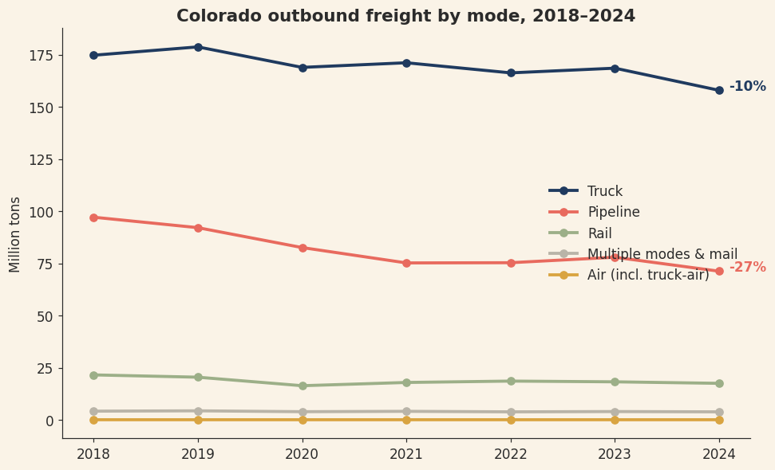
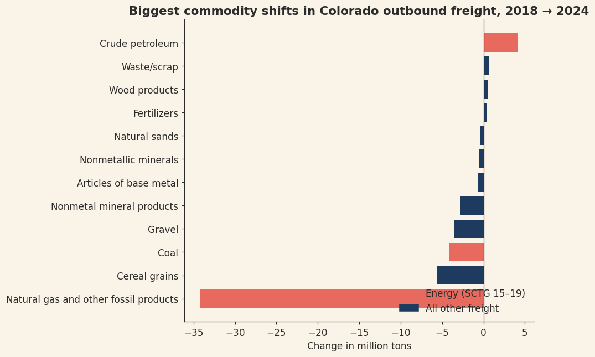
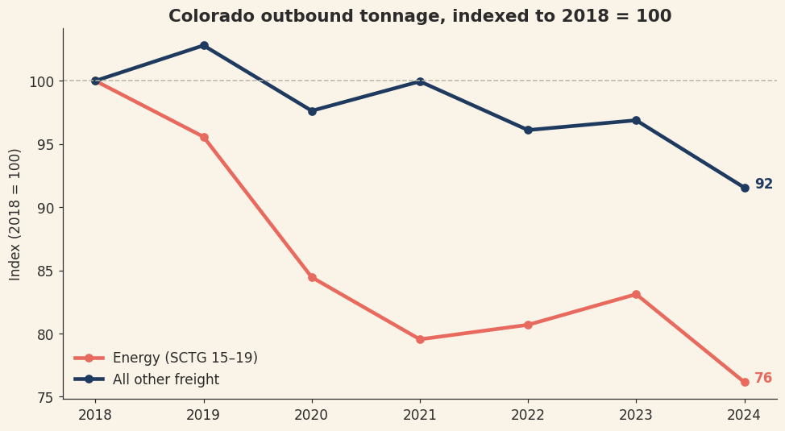
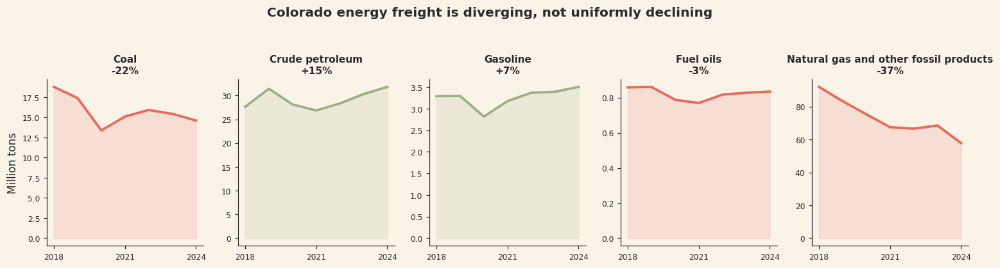
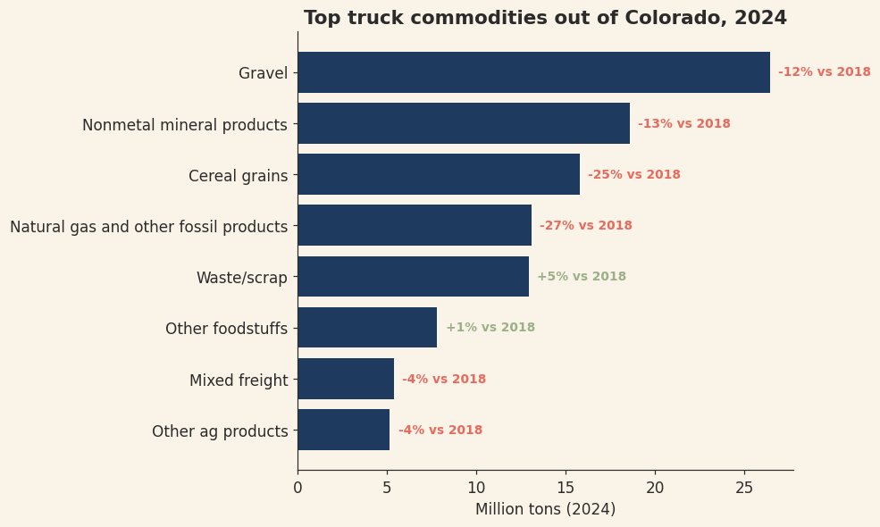

Colorado's outbound freight fell 15.8% between 2018 and 2024. This analysis of the federal Freight Analysis Framework finds the drop isn't a broad freight recession — nearly three-quarters of it traces to energy commodities, while the truck freight most Colorado businesses depend on held comparatively steady.
How have Colorado's freight flows shifted by commodity and mode from 2018 to 2024 — and does the decline threaten core trucking demand?
The analysis is framed for a fictional stakeholder, Rocky Mountain Freight Advisors — a regional 3PL and consulting firm advising carriers and infrastructure planners. Their clients make fleet-investment, lane-strategy, and modal-capacity decisions in the Colorado market, and a shrinking-tonnage headline raises an obvious question: shrinking where, and does it put trucking revenue at risk?
Source: the Freight Analysis Framework Version 5 (FAF5.7.1) regional database, published by the Bureau of Transportation Statistics and the Federal Highway Administration — the authoritative federal record of commodity flows by origin, destination, commodity, and mode.
The dataset scores well on ROCCC — a reliable, original, comprehensive, current, and citable government source. Key caveats are stated rather than hidden: FAF flows are modeled estimates rather than raw shipment records, and the 2023–24 figures are preliminary.
The national regional file is roughly two million rows. A documented pandas pipeline filtered it to Colorado-origin domestic flows, decoded the numeric mode and commodity codes to labels with validation checks, and reshaped the wide year columns into tidy long format.
Cleaned totals were cross-checked against independent extracts from the FAF Data Tabulation Tool; domestic-only figures landed appropriately below the all-trade-type recon numbers, confirming the filter behaved as intended.

Pipeline volumes fell 26.7% and rail 18.8%, while truck — which carries the majority of state tonnage — declined just 9.6%. The two modes most tied to energy commodities drove the contraction; general freight demand held far steadier.

Natural gas and other fossil products (SCTG 19) fell 37.2% — a loss of 34.2 million tons, six times larger than the next biggest decline and more than every other declining commodity combined. Coal added a further 22.2% drop, consistent with power-plant retirements. The largest non-energy mover, cereal grains (−25.2%), is flagged as a secondary finding with causes outside this dataset's scope.

Split into energy commodities (SCTG 15–19) versus everything else, the two halves diverge cleanly. By 2024 energy freight sat at an index of 76 (2018 = 100) against 92 for all other freight. Energy drove 72% of the total decline despite being a minority of volume — and where the non-energy line dips with the business cycle (2020 COVID, 2022–23 softness), the energy line steps down structurally regardless.

Natural gas products (−37.2%) and coal (−22.2%) drive nearly all of the decline — but crude petroleum freight moved the other way, growing 15.1%. A cross-check against EIA's Colorado crude-production series complicates the obvious read: state production was roughly flat over the period. The freight growth therefore likely reflects shipment-pattern changes and modeling factors, not production growth alone — a divergence worth flagging rather than glossing.

Gravel and aggregates, mixed freight, and foodstuffs — the commodities that fill trucks — held comparatively steady through 2024, supporting metro construction and consumer distribution. For carriers and 3PLs, the headline tonnage decline overstates the risk to truckload demand: the shrinkage is happening in pipelines and rail cars, not on trucks.
For Rocky Mountain Freight Advisors' clients:
Revenue tied to coal rail lanes and gas-product pipelines faces structural, not cyclical, decline — 72% of the state's tonnage loss came from energy. Contract and asset decisions should assume continued contraction.
Fleet and lane investments shouldn't be driven by headline state tonnage figures; core truck commodities declined only modestly (−9.6% overall).
Crude freight rose 15.1% since 2018. Monitor the FAF6 benchmark (expected mid-2026) and revisions to preliminary 2024 estimates before long-horizon commitments.